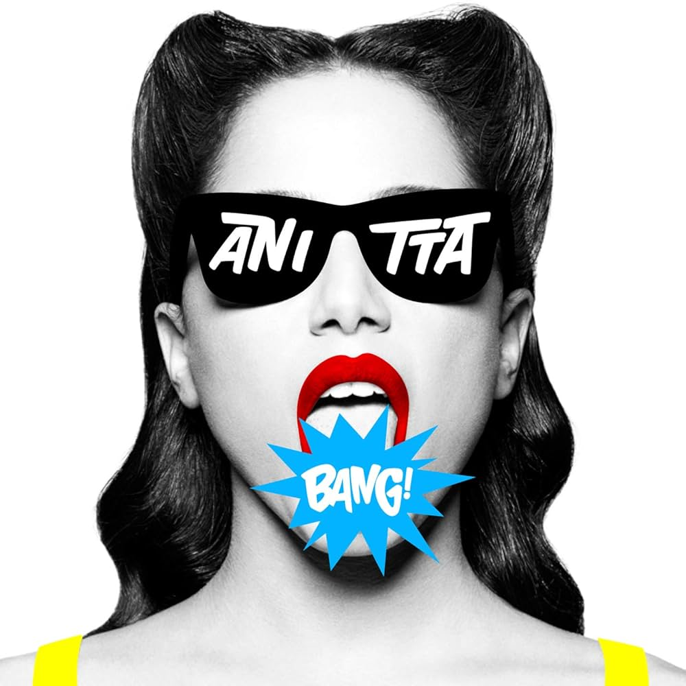
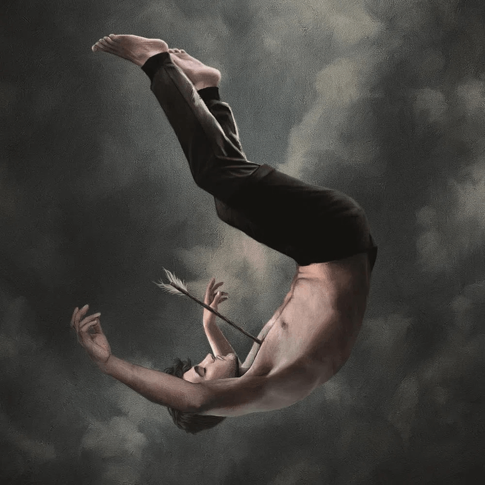
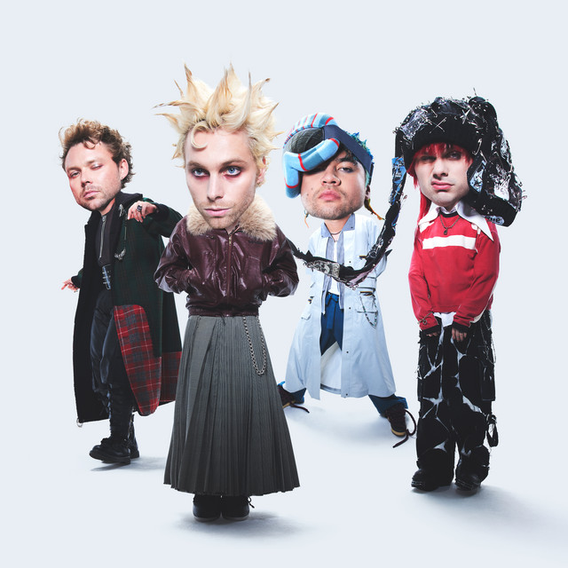

Bem-vindo ao Blog de Música!
Aqui você encontra um leve explicação sobre alguns tipos de música que costumo escutar, tem também meus artistas principais.
Clique em uma das imagens para saber mais sobre os estilos de música
Pop
 Sobre esse estilo de música temos alguns artistas que eu costumo escutar com mais frêquencia! Em resumo, é um estilo de música mais animada e popular, focada mais na animação e no ritmo contagiante.
Rock

O ROCK ja tem um estilo mais pesado, com batidas mais fortes, um estilo que grita emoção, algo mais punk, com artistas marcantes para a época.